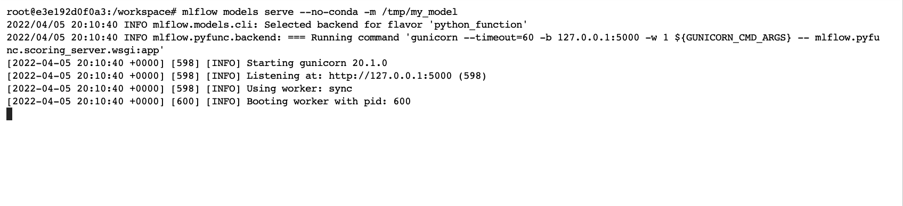

Storage format
Ultima modificación: Mayo 14, 2022
https://www.mlflow.org/docs/latest/models.html
Código base
[1]:
def load_data():
import pandas as pd
url = "http://archive.ics.uci.edu/ml/machine-learning-databases/wine-quality/winequality-red.csv"
df = pd.read_csv(url, sep=";")
y = df["quality"]
x = df.copy()
x.pop("quality")
return x, y
def make_train_test_split(x, y):
from sklearn.model_selection import train_test_split
(x_train, x_test, y_train, y_test) = train_test_split(
x,
y,
test_size=0.25,
random_state=123456,
)
return x_train, x_test, y_train, y_test
def eval_metrics(y_true, y_pred):
from sklearn.metrics import mean_absolute_error, mean_squared_error, r2_score
mse = mean_squared_error(y_true, y_pred)
mae = mean_absolute_error(y_true, y_pred)
r2 = r2_score(y_true, y_pred)
return mse, mae, r2
def report(estimator, mse, mae, r2):
print(estimator, ":", sep="")
print(f" MSE: {mse}")
print(f" MAE: {mae}")
print(f" R2: {r2}")
def train_estimator(alpha=0.5, l1_ratio=0.5, verbose=1):
import mlflow.sklearn
from sklearn.linear_model import ElasticNet
import mlflow
x, y = load_data()
x_train, x_test, y_train, y_test = make_train_test_split(x, y)
print('Tracking directory:', mlflow.get_tracking_uri())
with mlflow.start_run():
estimator = ElasticNet(alpha=alpha, l1_ratio=l1_ratio, random_state=12345)
estimator.fit(x_train, y_train)
mse, mae, r2 = eval_metrics(y_test, y_pred=estimator.predict(x_test))
if verbose > 0:
report(estimator, mse, mae, r2)
mlflow.log_param("alpha", alpha)
mlflow.log_param("l1_ratio", l1_ratio)
mlflow.log_metric("mse", mse)
mlflow.log_metric("mae", mae)
mlflow.log_metric("r2", r2)
mlflow.sklearn.log_model(estimator, "model")
# -------------------------------------------------------------------------------
#
# Guardado del modelo para posible ejecución.
# Crea el directori
#
mlflow.sklearn.save_model(estimator, "/tmp/my_model")
Almacenamiento del modelo de prueba
[2]:
!ls /tmp
[3]:
!rm -rf mlruns
train_estimator(0.1, 0.05)
Tracking directory: file:///workspace/mlflow/mlruns
ElasticNet(alpha=0.1, l1_ratio=0.05, random_state=12345):
MSE: 0.48683363717622585
MAE: 0.5493759222336462
R2: 0.30150487868829456
[4]:
!ls /tmp
my_model
[5]:
!ls -1 /tmp/my_model/
MLmodel
conda.yaml
model.pkl
requirements.txt
Contenido de los archivos
[6]:
#
# Especificación del modelo
#
!cat /tmp/my_model/MLmodel
flavors:
python_function:
env: conda.yaml
loader_module: mlflow.sklearn
model_path: model.pkl
python_version: 3.8.10
sklearn:
pickled_model: model.pkl
serialization_format: cloudpickle
sklearn_version: 1.0.2
model_uuid: 1378cf0a10b74b5797f74501a1e424db
utc_time_created: '2022-04-05 19:49:50.369927'
[7]:
#
# Especificación del ambiente
#
!cat /tmp/my_model/conda.yaml
channels:
- conda-forge
dependencies:
- python=3.8.10
- pip
- pip:
- mlflow
- cloudpickle==2.0.0
- psutil==5.9.0
- scikit-learn==1.0.2
- typing-extensions==4.1.1
name: mlflow-env
[8]:
#
# Especificación de requerimientos
#
!cat /tmp/my_model/requirements.txt
mlflow
cloudpickle==2.0.0
psutil==5.9.0
scikit-learn==1.0.2
typing-extensions==4.1.1
Uso de un modelo almacenado cargando directamente el modelo
[9]:
def check_estimator():
import mlflow
x, y = load_data()
x_train, x_test, y_train, y_test = make_train_test_split(x, y)
# -------------------------------------------------------------------------
# Se carga directamente de la carpeta en que se almacenó en el código
# anterior
estimator_path = "/tmp/my_model"
# -------------------------------------------------------------------------
estimator = mlflow.pyfunc.load_model(estimator_path)
mse, mae, r2 = eval_metrics(y_test, y_pred=estimator.predict(x_test))
report(estimator, mse, mae, r2)
#
# Debe coincidir con el mejor modelo encontrado en la celdas anteriores
#
check_estimator()
mlflow.pyfunc.loaded_model:
flavor: mlflow.sklearn
:
MSE: 0.48683363717622585
MAE: 0.5493759222336462
R2: 0.30150487868829456
Uso del modelo con models serve
[68]:
def get_json_test_data():
x, y = load_data()
x_train, x_test, y_train, y_test = make_train_test_split(x, y)
data = x_test.iloc[0:10,:].to_json(orient='split')
data = repr(data)
return data
data = get_json_test_data()
data
[68]:
'\'{"columns":["fixed acidity","volatile acidity","citric acid","residual sugar","chlorides","free sulfur dioxide","total sulfur dioxide","density","pH","sulphates","alcohol"],"index":[1105,553,1339,1591,1552,1479,371,631,1559,741],"data":[[6.3,0.57,0.28,2.1,0.048,13.0,49.0,0.99374,3.41,0.6,12.8],[5.0,1.04,0.24,1.6,0.05,32.0,96.0,0.9934,3.74,0.62,11.5],[7.5,0.51,0.02,1.7,0.084,13.0,31.0,0.99538,3.36,0.54,10.5],[5.4,0.74,0.09,1.7,0.089,16.0,26.0,0.99402,3.67,0.56,11.6],[6.3,0.68,0.01,3.7,0.103,32.0,54.0,0.99586,3.51,0.66,11.3],[8.2,0.28,0.6,3.0,0.104,10.0,22.0,0.99828,3.39,0.68,10.6],[7.9,0.24,0.4,1.6,0.056,11.0,25.0,0.9967,3.32,0.87,8.7],[10.4,0.28,0.54,2.7,0.105,5.0,19.0,0.9988,3.25,0.63,9.5],[7.8,0.6,0.26,2.0,0.08,31.0,131.0,0.99622,3.21,0.52,9.9],[9.2,0.53,0.24,2.6,0.078,28.0,139.0,0.99788,3.21,0.57,9.5]]}\''
Ejecutar en la consola:
mlflow models serve --no-conda -m /tmp/my_model

[69]:
!curl http://127.0.0.1:5000/invocations -H 'Content-Type: application/json' -d {data}
[6.14107753689611, 5.556028773272434, 5.626220764296235, 5.820641364591156, 5.800945721976724, 5.805582954964846, 5.304518116578597, 5.570136216416705, 5.18918510604575, 5.100142103795967]